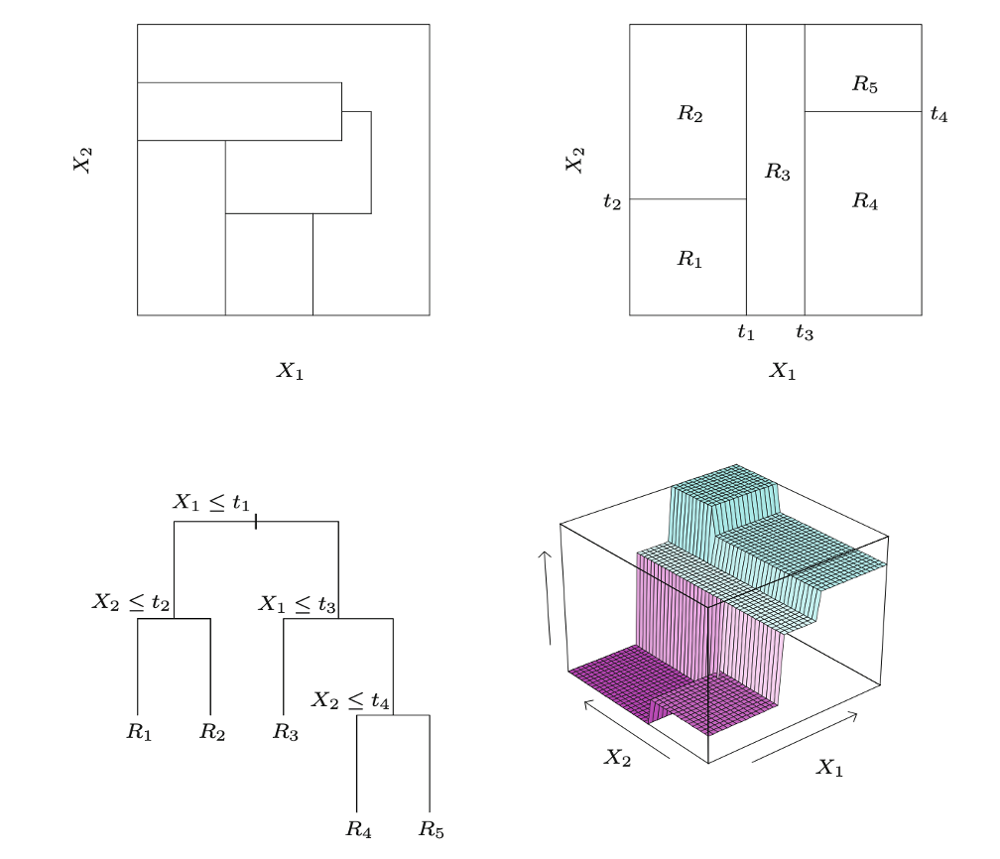

Chapter 6: Causal Forests
1 Outline
This chapter studies treatment-effect heterogeneity. We identify the conditional average treatment effect (CATE), review the curse of dimensionality, and build the intuition for honest causal trees and causal forests. The live code uses smaller forests than a final empirical analysis so that each demonstration finishes during class.
2 1. CATE and heterogeneity
For pre-treatment characteristics \(W_i\), define
\[ \tau(w)=\operatorname{CATE}(w) =\mathbb E[Y_i(1)-Y_i(0)\mid W_i=w]. \]
CATE organizes heterogeneity by observed characteristics and contains enough information to recover the ATE:
\[ \operatorname{ATE}=\mathbb E[\tau(W_i)]. \]
The individual treatment effect is usually unobservable and does not explain which characteristics generate heterogeneity. CATE is an estimable, structured compromise.
2.1 Unconfoundedness, overlap, and identification
We assume
\[ D_i\perp\!\!\!\perp (Y_i(1),Y_i(0))\mid W_i \]
and, at the value \(w\) of interest,
\[ 0<\Pr(D_i=1\mid W_i=w)<1. \]
The first condition is unconfoundedness; the second is overlap. They imply
\[ \tau(w) =\mathbb E[Y_i\mid D_i=1,W_i=w] -\mathbb E[Y_i\mid D_i=0,W_i=w]. \]
Unconfoundedness holds in a stratified experiment when treatment is randomized within strata even though its probability differs across strata. In observational data it requires \(W_i\) to contain all common causes of treatment and the potential outcomes. Flexible machine learning does not make this assumption testable or automatically credible.
If \(Y_i(d)=g_d(W_i,U_i)\), a sufficient condition is that treatment be independent of the outcome-relevant \(U_i\) after conditioning on \(W_i\). Treatment generally cannot remain related to such an unobservable conditional on \(W_i\) without violating unconfoundedness.
3 2. Why nonparametric regression is difficult
Let
\[ \mu_d(w)=\mathbb E[Y_i\mid D_i=d,W_i=w]. \]
If \(W\) is discrete, a cell mean may estimate this object. If \(W\) is continuous, the event \(W=w\) generally has probability zero.
3.1 Local methods
A local estimator averages observations near \(w\). With a scalar covariate, a bandwidth \(h\) controls the bias–variance trade-off. With \(p\) covariates, the effective sample size is typically of order \(nh^p\), so a pointwise standard error is of order
\[ \frac{1}{\sqrt{nh^p}}. \]
It is inversely proportional to the square root of the effective sample size. As \(p\) grows, observations close to \(w\) in every coordinate become scarce: the curse of dimensionality.
3.2 Global methods
A global method approximates the whole function, for example
\[ \mu_d(w)\approx\sum_{j=1}^J a_{dj}b_j(w), \]
using polynomials, B-splines, or wavelets. Increasing \(J\) reduces approximation bias but raises estimation variance. The number of terms needed for a flexible multivariate approximation can also increase rapidly with dimension.
Trees and forests learn adaptive neighborhoods and resemble local methods. Neural networks, studied later, construct global approximations.
4 3. Trees and forests
4.1 Regression trees
A regression tree recursively divides the covariate space into rectangular leaves:
- For every covariate and admissible threshold, consider splitting the current node in two.
- Evaluate the reduction in within-node squared error.
- Choose the best regularized split and repeat within each child.
- Predict at \(w\) using the average outcome in its terminal leaf.
The split locations are learned from the data. A tree can therefore use a wide region where the regression function is flat and a narrow region where it changes rapidly.

The top-right panel is a recursive rectangular partition; the bottom-left panel is its binary-tree representation; the bottom-right panel is the resulting piecewise-constant fit.
4.2 Causal trees
A causal tree changes the target from an outcome mean to the treatment-effect contrast. A useful split produces child nodes with meaningfully different estimated treatment effects, while maintaining enough treated and control observations in each child. Practical algorithms regularize this comparison; simply maximizing a raw squared difference between two noisy effects would overfit.
4.3 Honesty
Using the same outcomes both to choose a partition and to estimate effects in the selected leaves can chase noise. An honest tree:
- randomly separates a subsample into splitting and estimation observations;
- constructs the partition using only the splitting observations;
- estimates leaf effects using only the independent estimation observations.
Under suitable overlap, regularity, and smoothness conditions, honest forest estimates can be consistent and asymptotically normal. These are asymptotic results, not claims of exact finite-sample unbiasedness. Their pointwise rate is generally slower than the parametric \(n^{-1/2}\) rate.
4.4 Causal forests
A single tree is unstable. A causal forest averages many randomized honest trees:
- draw a subsample;
- grow an honest causal tree, considering a random subset of covariates at each split;
- repeat for many trees;
- average the tree predictions at \(w\).
Covariate subsampling decorrelates trees, minimum leaf size controls smoothing, and balanced-split restrictions preserve useful treatment–control comparisons.
Ordinary OLS is not a substitute for this flexibility. A linear interaction model forces CATE to be linear in \(W\), while unconfoundedness permits treatment to be related to nonlinear functions of \(W\).
5 4. Simulated application with grf
Consider
\[ Y=\max\{W_1,0\}D+W_2+\min\{W_3,0\}+\varepsilon. \]
The true CATE is \(\tau(w)=\max\{w_1,0\}\). The PDF version uses \(n=2{,}000\) and 4,000 trees for final variance estimates. This browser demonstration uses \(n=1{,}000\) and 500 trees. The smaller setting is for classroom speed, not a recommended final empirical specification.
If desired, visualize one tree separately:
The intervals are pointwise, not a simultaneous confidence band for the entire curve. For final work, increase num.trees and check that estimates and standard errors are stable.
5.1 Survey-wording data
The complete dataset is fairly large for an in-browser forest. The classroom cell uses a reproducible subsample of 4,000 observations and 500 trees. The PDF code uses the full sample and 4,000 trees.
6 Summary
- Unconfoundedness and overlap identify CATE as a conditional-mean contrast.
- A local estimator’s standard error is typically of order \((nh^p)^{-1/2}\).
- Causal trees adapt the partition to treatment-effect heterogeneity.
- Honesty separates partition selection from effect estimation.
- Causal forests average many randomized honest trees to improve stability and permit pointwise inference under regularity conditions.
- Flexible estimation never replaces the identifying assumptions.